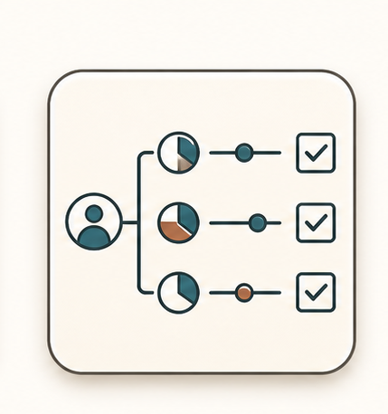
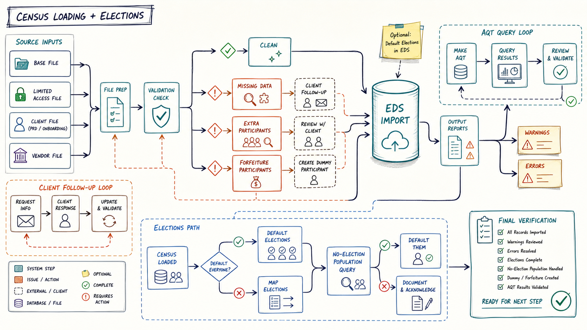

Elections
Default or map participant elections explicitly.

Multi-branch visual route

Decisions that change the route
Default everyone or map elections?
Are no-election participants termed or still action-worthy?
Does the client need to confirm deferral/election details through payroll?
Can missing election records be explained instead of assumed?
Inputs -> action -> output
Census population
Limited access elections when applicable
Mapped election file
AQT query for missing-election population
Decide whether participants are being defaulted or mapped from existing elections.
If defaulting during census, include the default instruction in the EDS census load.
If defaulting later, use one row per participant with Fund Descriptor blank, Percentage blank, and default indicator D.
If mapping elections, load the mapped election layout and verify coverage.
Defaulted election population
Mapped election population
No-election exception list
AQT verification evidence